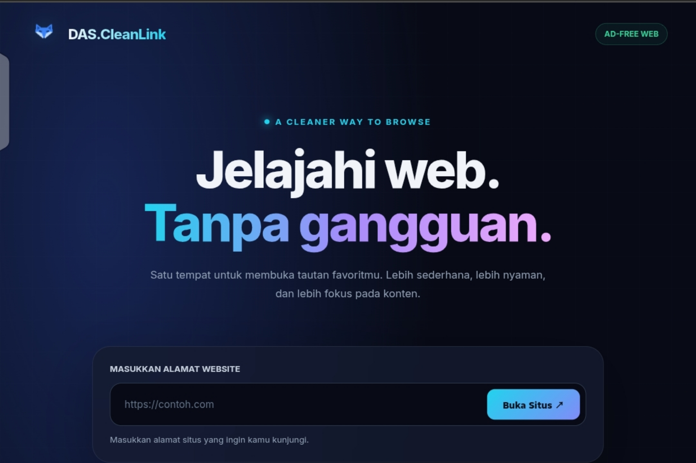

DAS CleanLink
Aplikasi Android yang saya kembangkan untuk memberantas iklan. Proyek ini menghadirkan solusi yang berfokus pada pengalaman penggunaan yang lebih bersih.

Tentang proyek
DAS CleanLink merupakan proyek aplikasi Android beserta website pendukungnya. Jelajahi halaman proyek atau unduh rilis aplikasi untuk mencobanya.